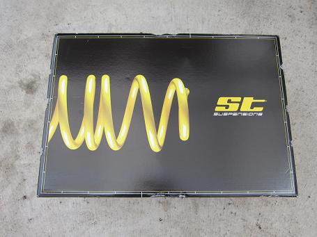
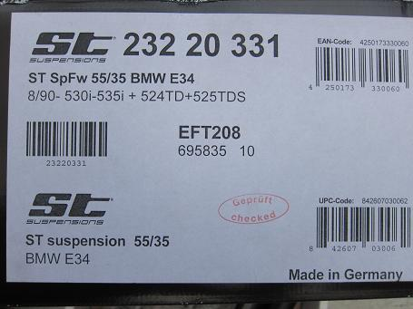
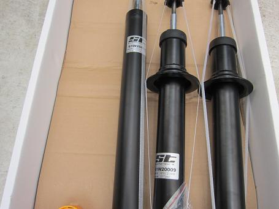
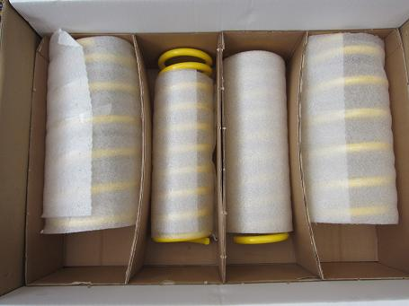
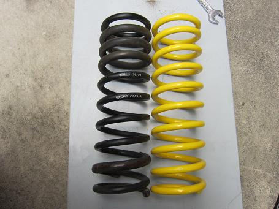
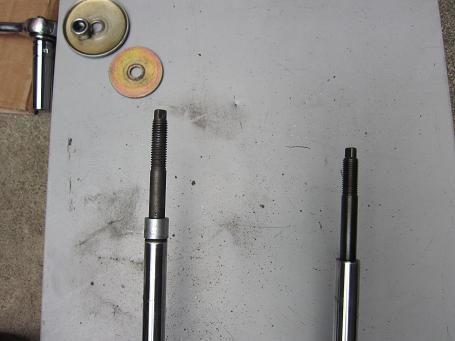
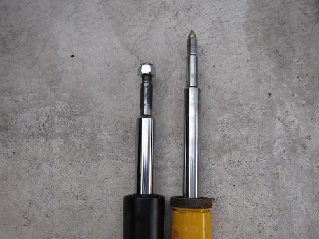
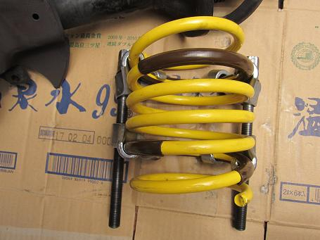
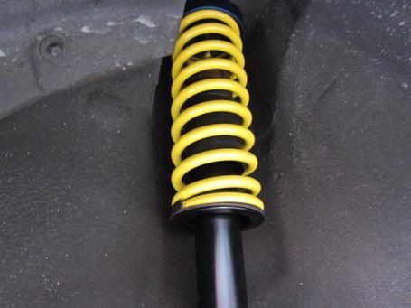

2015/7/9 サスペンションの交換
最近、アブソーバーのへたりが気になっていた。
E34のサスペンションを調べていると見慣れないメーカーの物を見つけた。
その名は「ST suspention」だ。
調べてみると元々は「Weitec」というメーカーだったが「KW」に買収されてKWの傘下に入ったようだ。
KWといえば、昔はKONIのアブソーバーに適当なコイルをセットにして‘やっつけ仕事’なイメージの強いメーカーだったが現在はそうではないようだ。
そこで、気になってドイツのショップに問い合わせてみると、日本にも送ってくれると返事があった。
しかし！ ガスが入っているので飛行機はNGで船便で発送とのことだった。
待つこと約３ヶ月・・・ 忘れたころに厳重な梱包で届いた。
早速取り付けてみよう！


細かく車種で分かれている。
日本には正規輸入されていないTD（ターボディーゼル）と535i 530iが共通のようだ。
ダウン量がF:55mm R:35mmとある。かなり車高は下がりそうだ。 あまり車高は下げたくないのだが・・・


KITの内容はアブソーバーとコイル１台分だ。
品質は悪くなさそうだ。 STのロゴとKWの名前がアブソーバーに入っている。


お決まりの新旧比較をしてみよう。
コイルの全長はアイバッハと同じだ。手で縮めてみた感じだとアイバッハより少し柔らかい。
アブソーバーは全長が短い。 スプリングコンプレッサーは必須アイテムだ。


フロントはコイルの取りつけにかなり苦労した。
アブソーバーがかなりショートストロークで右の写真まで縮めてもトップナットが掛からないのだ（汗
コンプレッサーの位置を何度か変えながらなんとかアッパーマウントを固定した。
これはかなり車高が下がってしまいそうだ・・・

街中では乗り心地が良くてスポーツサスペンションとは思えない乗り心地だ。
まるで絨毯の上を走っているような感じだ。
高速域ではどうだろうか。
１３０くらいまでは快適でそれなりにしっかりしている。 それ以上の領域では少し頼りなく、２００以上は危険といった感じだ。
柔らかすぎると言えばそれまでなのだが、縮み側は沈み込むほど柔らかく伸び側が非常に硬く高速コーナーでは外側の接地感が薄く感じるのだ。
突き上げなどは無く快適だが高速でブッ飛ぶ人にはあまりオススメできない。
分かりやすく言えば、純正の乗り心地のままに車高を下げた感じだろうか。
心配していた車高はかなり下がってしまった。 日常使いでは非常に不便になった・・・ これはまた改善策をUPしようと思う。
現在は橋本コーポレーションでも扱っているようなので日本でも簡単に入手できるだろう。 直輸入だとユーロのレートにもよるが２諭吉ほど安く買える。
追記：
５０００キロほど走ったところでＫＯＮＩに戻してしまった。
高速では非常に頼りなく、フニャフニャでまったく踏めない。
そして、車高が下がりすぎるのだ。 中央道の左コーナーでタイヤがフェンダーに接触し、フェンダーがめくれてしまった・・・
残念ながらこのＫＩＴはオススメできるものではない。
それでも気になる方がいれば貸し出します。（ただし面識のある仲間内限定）